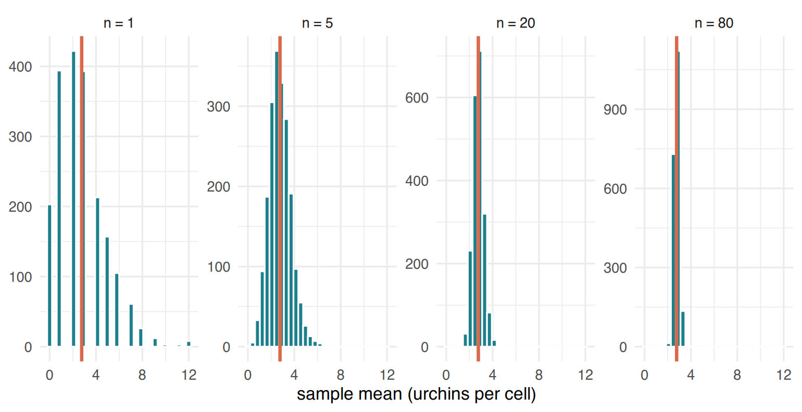
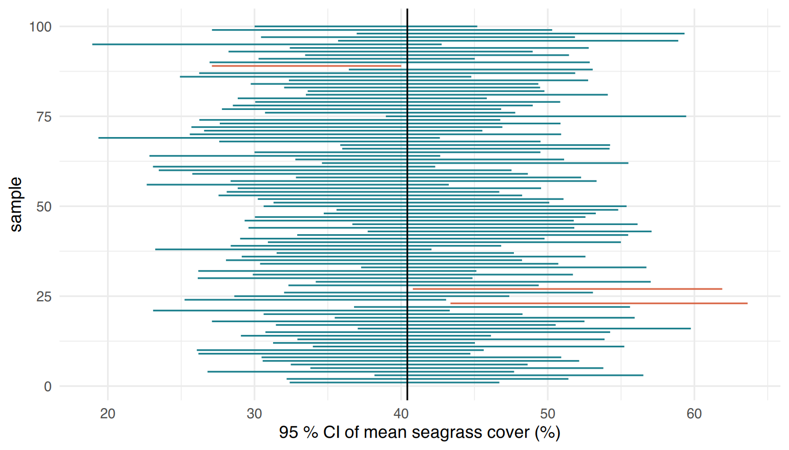
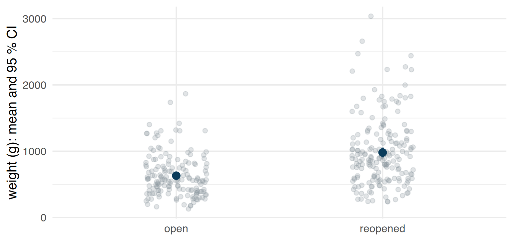

binom.test(), prop.test());binom.test(), prop.test()) ;In Session 1 we drew 1,000 samples from the lagoon and looked at their means. That histogram of sample means has a name: the sampling distribution of the mean. It tells how far a sample mean typically falls from the true μ. Let us see how it depends on the sample size n, using the number of urchins per cell (a skewed count).
À la séance 1, nous avons tiré 1 000 échantillons du lagon et regardé leurs moyennes. Cet histogramme des moyennes d’échantillons a un nom : la distribution d’échantillonnage de la moyenne. Elle indique à quelle distance une moyenne d’échantillon tombe habituellement du vrai μ. Voyons comment elle dépend de la taille n de l’échantillon, avec le nombre d’oursins par cellule (un comptage asymétrique).
lag <- read.csv("data/lagoon_population.csv")
mu <- mean(lag$urchins); sigma <- sd(lag$urchins)
set.seed(5)
sims <- do.call(rbind, lapply(c(1, 5, 20, 80), function(n) {
data.frame(n = paste("n =", n), mean = replicate(2000, mean(sample(lag$urchins, n))))
}))
sims$n <- factor(sims$n, levels = paste("n =", c(1, 5, 20, 80)))
ggplot(sims, aes(mean)) +
geom_histogram(bins = 30, fill = "#1b7f8c", colour = "white") +
geom_vline(xintercept = mu, colour = "#d9694a", linewidth = 1) +
facet_wrap(~ n, nrow = 1, scales = "free_y") +
labs(x = "sample mean (urchins per cell)", y = NULL) + theme_c(11)
sims %>% group_by(n) %>% summarise(sd_of_means = sd(mean)) %>%
mutate(sigma_over_sqrt_n = sigma / sqrt(c(1, 5, 20, 80)))#> # A tibble: 4 × 3
#> n sd_of_means sigma_over_sqrt_n
#> <fct> <dbl> <dbl>
#> 1 n = 1 2.07 2.00
#> 2 n = 5 0.901 0.893
#> 3 n = 20 0.448 0.447
#> 4 n = 80 0.216 0.223Functions and arguments used here
| Function / argument | What it does | Value it expects |
|---|---|---|
lapply(x, function(n) {...}) |
applies the function to each value of x and returns a
list |
|
do.call(rbind, list) |
stacks all the data frames of a list into one | |
scales = "free_y" (in facet_wrap()) |
each panel has its own y axis | "fixed", "free", "free_x",
"free_y" |
Fonctions et arguments utilisés ici
| Fonction / argument | Ce qu’il fait | Valeur attendue |
|---|---|---|
lapply(x, function(n) {...}) |
applique la fonction à chaque valeur de x et renvoie
une liste |
|
do.call(rbind, list) |
empile tous les data frames d’une liste en un seul | |
scales = "free_y" (in facet_wrap()) |
chaque panneau a son propre axe y | "fixed", "free", "free_x",
"free_y" |
Three facts, visible on the graph and in the table:
Trois faits, visibles sur le graphique et dans le tableau :
In real life we have one sample, and we do not know σ. We estimate the spread of the sampling distribution with the standard error:
SE = s / √n
where s is the sample SD. Reminder from the R course: the SD describes the data (variation between units, does not shrink with n); the SE describes the precision of the mean (shrinks with n).
Dans la réalité nous avons un seul échantillon, et nous ne connaissons pas σ. On estime la dispersion de la distribution d’échantillonnage par l’erreur standard :
ES = s / √n
où s est l’ET de l’échantillon. Rappel du cours de R : l’ET décrit les données (variation entre unités, ne diminue pas avec n) ; l’ES décrit la précision de la moyenne (diminue avec n).
set.seed(2026)
s30 <- sample(lag$urchins, 30)
c(mean = mean(s30), sd = sd(s30), se = sd(s30) / sqrt(30))#> mean sd se
#> 2.9000000 2.6954623 0.4921218A 95 % confidence interval is estimate ± (critical value × SE). For a mean, the critical value comes from the t distribution with n − 1 degrees of freedom: like the normal, but with heavier tails, because s is itself uncertain. With large n, t ≈ 1.96; with small n, it is larger (wider interval).
Un intervalle de confiance à 95 % vaut estimation ± (valeur critique × ES). Pour une moyenne, la valeur critique vient de la loi de t à n − 1 degrés de liberté : comme la normale, mais avec des queues plus lourdes, car s est lui-même incertain. Avec un grand n, t ≈ 1,96 ; avec un petit n, il est plus grand (intervalle plus large).
#> [1] 2.776445 2.262157 2.045230 1.984217 1.962339oc <- read.csv("data/octopus_catch.csv")
w <- oc$weight_g[oc$area == "reopened"]
n <- length(w); m <- mean(w); se <- sd(w) / sqrt(n)
t_crit <- qt(0.975, df = n - 1)
c(lower = m - t_crit * se, mean = m, upper = m + t_crit * se)#> lower mean upper
#> 905.8995 980.0541 1054.2086#> [1] 905.8995 1054.2086
#> attr(,"conf.level")
#> [1] 0.95Functions and arguments used here
| Function / argument | What it does | Value it expects |
|---|---|---|
qt(p, df) |
quantile of the t distribution; qt(0.975, df)
= the critical value of a two-sided 95 % interval |
|
df |
degrees of freedom: n − 1 for one mean | a positive number |
t.test(x, conf.level)$conf.int |
confidence interval of the mean of x (the test itself
is in Session 6) |
|
conf.level |
confidence level | 0.95 (default), 0.90, 0.99… |
Fonctions et arguments utilisés ici
| Fonction / argument | Ce qu’il fait | Valeur attendue |
|---|---|---|
qt(p, df) |
quantile de la loi de t ; qt(0.975, df) = la
valeur critique d’un intervalle bilatéral à 95 % |
|
df |
degrés de liberté : n − 1 pour une moyenne | un nombre positif |
t.test(x, conf.level)$conf.int |
intervalle de confiance de la moyenne de x (le test
lui-même est à la séance 6) |
|
conf.level |
niveau de confiance | 0,95 (défaut), 0,90, 0,99… |
The method, repeated on many samples, produces intervals that contain the true μ 95 % of the time. Our particular interval either contains μ or not — we cannot know. The simulation below draws 100 samples of 20 cells from the lagoon and their 95 % CIs: about 5 miss the true mean (in orange).
La méthode, répétée sur de nombreux échantillons, produit des intervalles qui contiennent le vrai μ 95 % du temps. Notre intervalle particulier contient μ ou non — nous ne pouvons pas le savoir. La simulation ci-dessous tire 100 échantillons de 20 cellules du lagon et leurs IC à 95 % : environ 5 ratent la vraie moyenne (en orange).
set.seed(12)
mu_cov <- mean(lag$seagrass_cover)
cis <- t(replicate(100, t.test(sample(lag$seagrass_cover, 20))$conf.int))
cis <- data.frame(sample = 1:100, lower = cis[, 1], upper = cis[, 2])
cis$hit <- cis$lower <= mu_cov & cis$upper >= mu_cov
sum(cis$hit)#> [1] 97ggplot(cis, aes(y = sample, xmin = lower, xmax = upper, colour = hit)) +
geom_errorbarh(height = 0) + geom_vline(xintercept = mu_cov) +
scale_colour_manual(values = c(`TRUE` = "#1b7f8c", `FALSE` = "#d9694a"), guide = "none") +
labs(x = "95 % CI of mean seagrass cover (%)", y = "sample") + theme_c(11)#> Warning: `geom_errorbarh()` was deprecated in ggplot2 4.0.0.
#> ℹ Please use the `orientation` argument of `geom_errorbar()` instead.
#> This warning is displayed once per session.
#> Call `lifecycle::last_lifecycle_warnings()` to see where this warning was generated.#> `height` was translated to `width`.
Functions and arguments used here
| Function / argument | What it does | Value it expects |
|---|---|---|
t(m) |
transposes a matrix (rows ↔︎ columns); here: one row per sample | a matrix |
geom_errorbarh(aes(xmin, xmax), height) |
horizontal interval from xmin to xmax;
height = 0 removes the end caps |
|
guide = "none" |
hides the legend of this scale |
Fonctions et arguments utilisés ici
| Fonction / argument | Ce qu’il fait | Valeur attendue |
|---|---|---|
t(m) |
transpose une matrice (lignes ↔︎ colonnes) ; ici : une ligne par échantillon | une matrice |
geom_errorbarh(aes(xmin, xmax), height) |
intervalle horizontal de xmin à xmax ;
height = 0 enlève les petites barres aux bouts |
|
guide = "none" |
cache la légende de cette échelle |
Wrong: “there is a 95 % probability that μ is between 906 and 1,054 g.” μ is fixed; the interval is what varies. Right: “we are 95 % confident that the mean weight is between 906 and 1,054 g”, meaning the method captures μ in 95 % of samples. The width of the CI is the precision of the estimate — report it with every mean.
Faux : « il y a 95 % de probabilité que μ soit entre 906 et 1 054 g. » μ est fixe ; c’est l’intervalle qui varie. Juste : « nous sommes confiants à 95 % que le poids moyen est entre 906 et 1 054 g », c’est-à-dire que la méthode capture μ dans 95 % des échantillons. La largeur de l’IC est la précision de l’estimation — donnez-la avec chaque moyenne.
For a proportion p̂ = x / n, the SE is √(p̂(1 − p̂)/n). Two functions
give the CI directly: binom.test() (exact,
recommended for small n or p̂ near 0 or 1) and prop.test()
(approximate, with continuity correction).
Pour une proportion p̂ = x / n, l’ES vaut √(p̂(1 − p̂)/n). Deux
fonctions donnent directement l’IC : binom.test()
(exact, conseillé pour un petit n ou un p̂ proche de 0 ou 1) et
prop.test() (approché, avec correction de continuité).
under <- sum(oc$weight_g[oc$area == "open"] < 350)
n_open <- sum(oc$area == "open")
c(x = under, n = n_open, p_hat = under / n_open)#> x n p_hat
#> 25.00000 160.00000 0.15625#> [1] 0.1037418 0.2219562
#> attr(,"conf.level")
#> [1] 0.95#> [1] 0.1055211 0.2239739
#> attr(,"conf.level")
#> [1] 0.95Functions and arguments used here
| Function / argument | What it does | Value it expects |
|---|---|---|
binom.test(x, n, p, conf.level) |
exact test and CI for a proportion x / n
(Clopper–Pearson) |
x successes out of n |
prop.test(x, n, correct) |
approximate test and CI for one or several proportions;
correct = TRUE (default) applies a continuity
correction |
Fonctions et arguments utilisés ici
| Fonction / argument | Ce qu’il fait | Valeur attendue |
|---|---|---|
binom.test(x, n, p, conf.level) |
test et IC exacts pour une proportion x / n
(Clopper–Pearson) |
x succès sur n |
prop.test(x, n, correct) |
test et IC approchés pour une ou plusieurs proportions ;
correct = TRUE (défaut) applique une correction de
continuité |
There is no simple formula for the CI of a median. The bootstrap imitates “drawing many samples from the population” by drawing many samples from the sample itself, with replacement, each of size n. The spread of the statistic over these resamples estimates its sampling variability; the 2.5 % and 97.5 % quantiles give a 95 % percentile CI.
Il n’existe pas de formule simple pour l’IC d’une médiane. Le bootstrap imite « tirer de nombreux échantillons de la population » en tirant de nombreux échantillons dans l’échantillon lui-même, avec remise, chacun de taille n. La dispersion de la statistique sur ces ré-échantillons estime sa variabilité d’échantillonnage ; les quantiles 2,5 % et 97,5 % donnent un IC percentile à 95 %.
#> [1] 890#> 2.5% 97.5%
#> 830 960Use at least 2,000–10,000 resamples; set a seed so that the result can be repeated. The bootstrap needs a random, representative sample — it cannot fix bias, and it is unreliable with very small n (< 15–20).
Utilisez au moins 2 000 – 10 000 ré-échantillons ; fixez une graine pour que le résultat puisse être refait. Le bootstrap a besoin d’un échantillon aléatoire et représentatif — il ne corrige pas un biais, et il est peu fiable avec un très petit n (< 15–20).
| Bars show | Use to | Width |
|---|---|---|
| ± SD | describe the variability of the data | does not shrink with n |
| ± SE | show the precision of the mean (≈ 68 % CI) | shrinks with √n |
| 95 % CI | show the precision of the mean, for comparisons | ≈ 2 × SE |
Always state which one in the caption. Prefer CIs for comparing means, and show the raw points when n is small.
| Les barres montrent | Pour | Largeur |
|---|---|---|
| ± ET | décrire la variabilité des données | ne diminue pas avec n |
| ± ES | montrer la précision de la moyenne (≈ IC à 68 %) | diminue avec √n |
| IC à 95 % | montrer la précision de la moyenne, pour comparer | ≈ 2 × ES |
Indiquez toujours laquelle dans la légende. Préférez les IC pour comparer des moyennes, et montrez les points bruts quand n est petit.
ci_tab <- oc %>% group_by(area) %>%
summarise(n = n(), mean = mean(weight_g), se = sd(weight_g) / sqrt(n),
lower = mean - qt(0.975, n - 1) * se, upper = mean + qt(0.975, n - 1) * se)
ci_tab#> # A tibble: 2 × 6
#> area n mean se lower upper
#> <chr> <int> <dbl> <dbl> <dbl> <dbl>
#> 1 open 160 631. 25.0 581. 680.
#> 2 reopened 185 980. 37.6 906. 1054.ggplot(ci_tab, aes(area, mean)) +
geom_jitter(data = oc, aes(area, weight_g), width = 0.15, alpha = 0.25, colour = "#8a969e") +
geom_pointrange(aes(ymin = lower, ymax = upper), colour = "#0b3d5c", linewidth = 1) +
labs(x = NULL, y = "weight (g): mean and 95 % CI") + theme_c()
Functions and arguments used here
| Function / argument | What it does | Value it expects |
|---|---|---|
geom_pointrange(aes(ymin, ymax)) |
a point (the mean) with a vertical line from ymin to
ymax (the CI) |
|
data = oc (in a geom) |
this layer uses another data frame than the one given in
ggplot() |
a data frame |
Fonctions et arguments utilisés ici
| Fonction / argument | Ce qu’il fait | Valeur attendue |
|---|---|---|
geom_pointrange(aes(ymin, ymax)) |
un point (la moyenne) avec une ligne verticale de ymin
à ymax (l’IC) |
|
data = oc (in a geom) |
cette couche utilise un autre data frame que celui donné dans
ggplot() |
un data frame |
With octopus_catch.csv, open area only
(wo <- oc$weight_g[oc$area == "open"]):
binom.test()) of the proportion of
females: lower and upper limits (3 decimals).set.seed(1); bm <- replicate(5000, median(sample(wo, replace = TRUE))).
Lower limit (2.5 % quantile) of the bootstrap CI of the median (1
decimal).Avec octopus_catch.csv, zone ouverte
seulement (wo <- oc$weight_g[oc$area == "open"]) :
binom.test()) de la proportion de
femelles : limites inférieure et supérieure (3
décimales).set.seed(1); bm <- replicate(5000, median(sample(wo, replace = TRUE))).
Limite inférieure (quantile 2,5 %) de l’IC bootstrap de la médiane (1
décimale).Q4: qt(0.975, df = 9). Q5–6: count the females of the
reopened area and its number of octopuses, then
binom.test(x, n)$conf.int. Q8:
t.test(wo, conf.level = 0.99)$conf.int, then
diff().
Q4 : qt(0.975, df = 9). Q5–6 : comptez les femelles de
la zone rouverte et son nombre de pieuvres, puis
binom.test(x, n)$conf.int. Q8 :
t.test(wo, conf.level = 0.99)$conf.int, puis
diff().
oc <- read.csv("data/octopus_catch.csv")
wo <- oc$weight_g[oc$area == "open"]
sd(wo) / sqrt(length(wo)) # 1
t.test(wo)$conf.int # 2, 3
qt(0.975, df = 9) # 4
sex_r <- oc$sex[oc$area == "reopened"]
binom.test(sum(sex_r == "F"), length(sex_r))$conf.int # 5, 6
set.seed(1); bm <- replicate(5000, median(sample(wo, replace = TRUE)))
quantile(bm, c(0.025, 0.975)) # 7
diff(t.test(wo, conf.level = 0.99)$conf.int) # 8
# 9: divided by 2 (sqrt(4) = 2) 10: the method captures mu in 95 % of samples